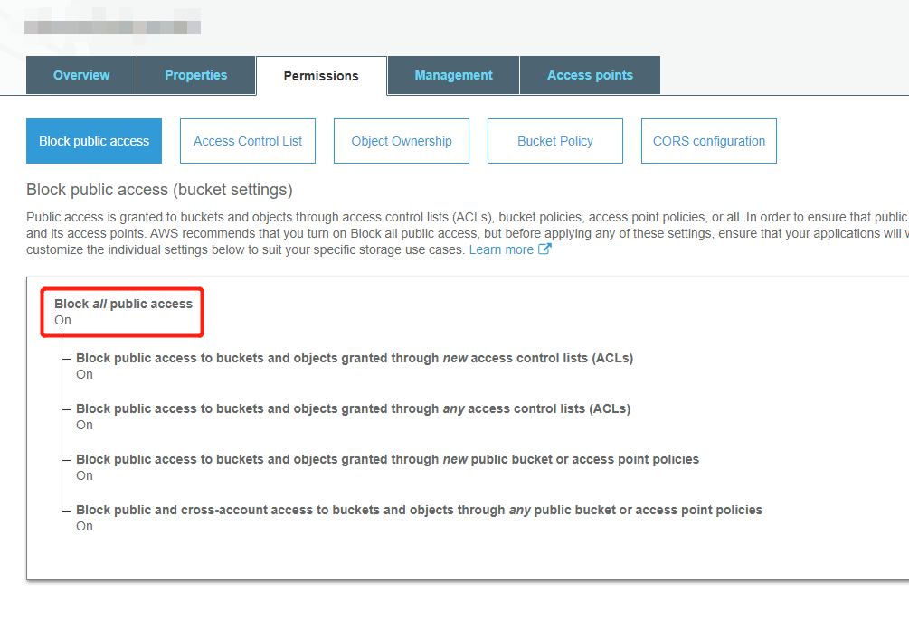
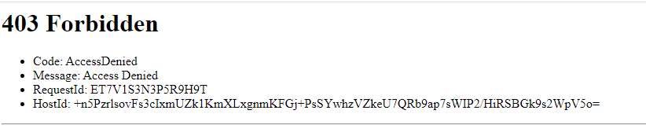
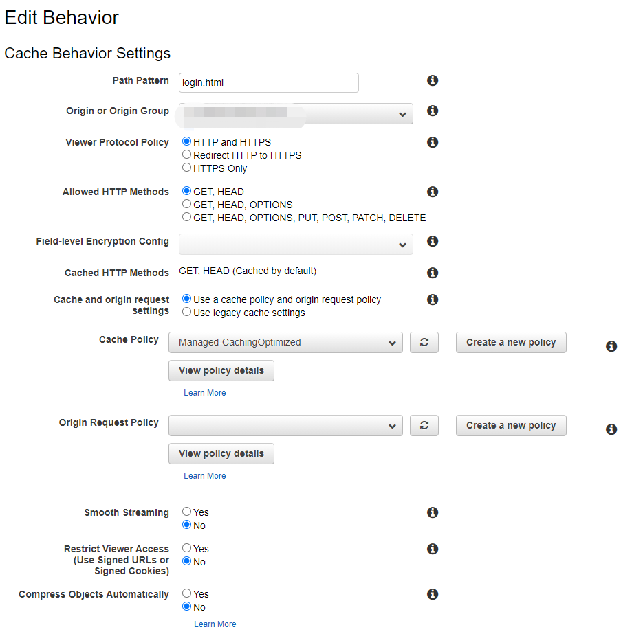
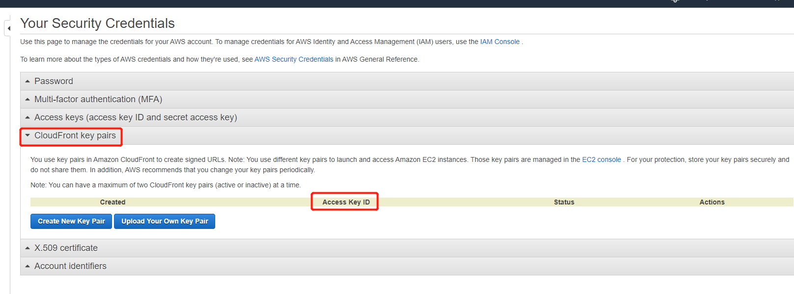

AWS SAM and CloudFront
Part One AWS SAM
Part Two AWS SSO
Part Three AWS CloudFront
Restricting Access to Files in Amazon S3 Buckets
You can optionally secure the content in your Amazon S3 bucket so that users can access it through CloudFront but cannot access it directly by using Amazon S3 URLs. This prevents someone from bypassing CloudFront and using the Amazon S3 URL to get content that you want to restrict access to. (Using Origin Access Identity)
Block all public access to S3 bucket
 When creating new distribution in CloudFront, do the following steps
- Select Web distribution
- Select the S3 bucket you want to connect to
- Select Redirect HTTP to HTTPS if you don't want people to access your content by HTTP requests
- Select Yes for 'Restrict Viewer Access'
- Select Self as trusted signer
Create Trusted Signer
Note When 'Restrict Viewer Access' is selected, you can specify which account is the 'Trusted Signer'. Which means they have the permission to create signed URL or signed cookie for people to access your private content.
Self is the default 'Truested Signer', which is the account your are currently using. You can also add another accounts by entering their account ID.
Create another behavior
Login page should be accessiable by public, so as the js, css and image files. So we should create another behavior to let CloudFront know which file access is retricted and which are not.
Path Pattern decides which files can be set to public(also select No for 'Retrict Viewer Access' this time)
Rules about Path Pattern can be found here
Create CloudFront Key Pairs
We need CloudFront key pairs to create signed URLs and signed Cookies, they are a pair of public and private keys AWS uses to encrypt requests people send to CloudFront, so it knows whether they are authenticated users.
This step can only be done using AWS root account, IAM account cannot create CloudFront key pairs.
Save the private key pem file and Access key ID to a save place. We will use it later.
- Task List for Serving Private Content using S3 and CloudFront
- Restricting Access to Amazon S3 Content by Using an Origin Access Identity
- Specifying the AWS Accounts That Can Create Signed URLs and Signed Cookies (Trusted Signers)
- Reformatting the CloudFront Private Key (.NET and Java Only)
- Using Signed URLs
- Creating a Signed URL Using a Canned Policy
- Code Example: Creating Amazon CloudFront Signed URLs in Node.js
- Code Example: Create a URL Signature Using C# and the .NET Framework
- Epoch & Unix Timestamp Conversion Tools
- Why is CloudFront serving outdated content from Amazon S3?
- RSA public/private keys in YAML
- Convert PEM to XML in C#
- CloudFront Path Pattern Rules